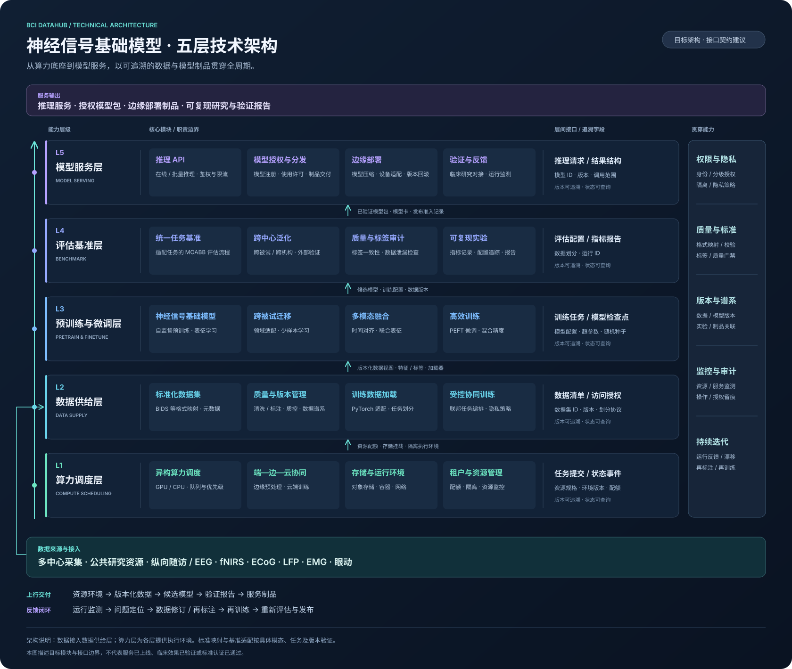

把临床沉淀转化为有质量依据的数据资源
设备与历史数据接入 → 协同质控 → 专病数据集
预期交付
查看采集与治理 →采集规范、质量报告、版本化资源与共享边界
贯通多中心采集、标准化治理、数据集构建与模型应用。让神经信号成为可追溯、可复用、可协作的高质量数据资产。
围绕高质量数据集的全生命周期，将每个环节的输入、处理与交付连接起来。
面向医院采集终端、科研设备与历史文件，统一记录采集协议、设备信息和任务事件，建立跨中心、跨模态的关联。
组织 EEG、fNIRS、ECoG、LFP、EMG、眼动等信号及其采集元数据。
关联受试者、会话、任务事件和时间基准，保留源文件与设备信息。
根据部署条件，在机构侧完成预处理，再上传授权范围内的数据或表征。
设备信号、历史文件、采集协议与临床随访信息
来源、模态、事件与原始记录相互关联
围绕神经信号特征建立质量检查与专家复核流程，从伪迹、坏道到任务标签和多模态同步，保留每次处理的依据。
检查坏道、伪迹、缺失与信噪比；记录规则、处理参数和影响范围。
按任务协议组织意图标签、事件复核和分歧处理，跟踪标注一致性。
核对事件时间戳和模态同步关系，标记需要人工确认的异常。
原始信号、任务事件、标注协议与质量规则
任务事件不一致 → 专家复核 → 记录修订依据
保留每项检查的定义、范围和处理记录
按病种、人群、范式和模态组织数据，完成标准化加工、队列定义和数据划分，将临床积累转化为可复用的研究资源。
结合病种、范式、随访阶段和质量条件定义纳入范围。
对照适用规范组织数据集、受试者、会话和模态，保留字段映射。
固定训练、验证和测试划分，关联质量报告、数据说明和引用信息。
通过检查的数据、任务定义与队列纳入条件
按被试划分，记录跨中心评估边界
从标准化加载到预训练、微调和跨中心评估，记录数据、配置与模型制品的关联，支撑神经信号基础模型研究。
面向 PyTorch 等研究工具链组织加载、特征与标签映射。
结合资源条件设计自监督学习、跨被试迁移与参数高效微调流程。
按适用任务对接 MOABB 等基准，记录数据划分、实验配置及外部验证结果。
固定版本的数据集、训练配置与评估协议
版本 · 任务 · 被试划分
预训练 / 微调 · 多模态融合
跨被试 · 跨机构 · 统一指标
关联配置、环境与数据版本，支持实验复现
面向纵向随访和长期采集，管理版本、数据谱系与质量变化，连接问题反馈、再标注和再训练。
关联源记录、加工步骤、标签版本和下游实验，定位变更影响。
按中心、人群与时间窗口观察分布变化，生成待复核问题。
将问题定位、专家复核、版本更新与模型重新评估串联起来。
新增采集、随访记录、质量变化与使用反馈
定位源会话 → 核对事件 → 修订标签
从机构贡献数据，到研究团队使用数据，再到算法与产业转化，明确每一步能获得的交付。
设备与历史数据接入 → 协同质控 → 专病数据集
采集规范、质量报告、版本化资源与共享边界
定义研究队列 → 固定数据划分 → 训练与评估
任务数据、实验记录与跨被试 / 跨中心评估
明确场景需求 → 定制数据集 → 协作验证
数据交付说明、模型制品与验证报告
按数据规模、访问条件与研究任务选择部署路径。
机构域内采集、存储与治理
集中资源管理与弹性任务调度
边缘预处理与授权范围内协作
设备与临床系统接口 ／ GB/T 与 BIDS 格式映射 ／ PyTorch 数据加载 ／ MOABB 适用任务评估
先了解人群、任务与使用条件，再决定下一步。
急性卒中患者左右手运动想象记录，用于运动意图解码与跨被试研究。
用药 ON/OFF 与 130 Hz DBS 前后记录，支持神经状态特征与刺激响应研究。
ALS 患者 P300 拼写任务记录，支持事件相关电位识别与辅助沟通研究。
儿童难治性癫痫头皮脑电与发作时间标记，用于发作检测研究。
持续性意识障碍患者 EEG、EOG 与 EMG 记录，支持睡眠及意识状态相关研究。
健康受试者静息与连续心算脑电，用于认知负荷和任务状态识别研究。
场景描述研究方向，资源状态描述开放方式；不将两者等同于临床有效性。
急性卒中患者左右手运动想象记录，用于运动意图解码与跨被试研究。
查看相关资源 →用药 ON/OFF 与 130 Hz DBS 前后记录，支持神经状态特征与刺激响应研究。
查看相关资源 →ALS 患者 P300 拼写任务记录，支持事件相关电位识别与辅助沟通研究。
查看相关资源 →儿童难治性癫痫头皮脑电与发作时间标记，用于发作检测研究。
查看相关资源 →持续性意识障碍患者 EEG、EOG 与 EMG 记录，支持睡眠及意识状态相关研究。
查看相关资源 →健康受试者静息与连续心算脑电，用于认知负荷和任务状态识别研究。
查看相关资源 →理解每份数据从哪里来、经历了什么处理，以及适合哪些研究任务。
从数据集到受试者、会话与模态，逐层了解采集结构和字段。
查看检查范围、指标定义与已知限制，避免用单一分数替代判断。
关联数据版本、标签协议与使用条件，帮助记录研究依据。
详情标明统计口径、已知限制与来源链接，不以展示分数替代文件质控。
查看来源与限制 →阅读核心标准，了解架构与数据格式要求。平台白皮书筹备中。
了解脑机接口系统的架构参照，以及平台各能力层的职责边界。
从多模态数据组织出发，理解资源目录、元数据与格式映射的设计。
理解 EEG 记录、采集元数据、通道与电极描述之间的组织关系。
白皮书尚未编制，名称及内容待确定，暂不提供预览。
从算力底座到模型服务，五层能力逐级向上承载数据价值，每一层都定义清晰的模块边界与标准接口。

面向医院、高校与产业团队。了解接入要求，明确共享边界，共同探索神经数据的研究价值。
当前为产品原型，申请仅演示流程，不向任何机构发送信息。